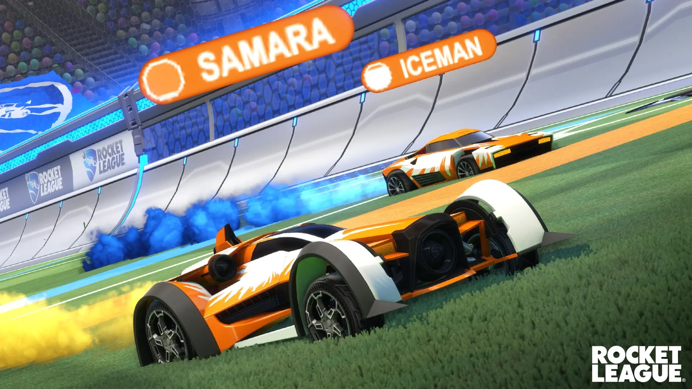
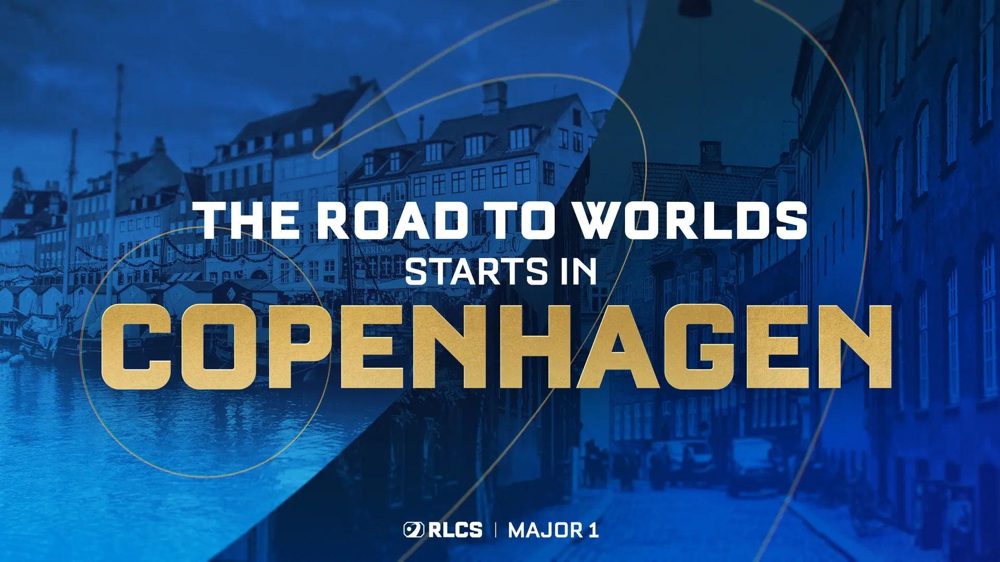
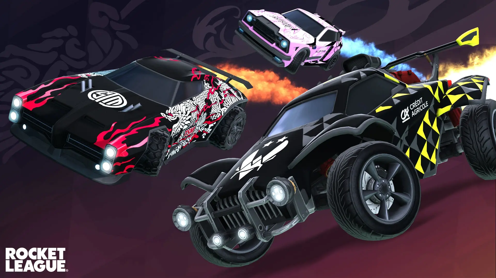

Tout le monde aime être au courant de ce qu'il se passe, n'est-ce pas ? C'est pourquoi nous vous présenterons toute les actutalités concernant Rocket League sur cette page, pour vous tenir au courant !
Vous retrouverez
Ci-dessus vous retrouverez des actualités liées à Rocket League. Nous allons vous présenter des actualités mondiales mais aussi des actualités plus petites, propres à la communauté. Si vous souhaitez vous tenir informer, ou pas simple soucis de curiosité, vous êtes au bon endroit ! Nous vous souhaitons de trouver votre bonheur ! Si vous avez des question, regardez dans la FAQ.
Un indicateur de boost est apparu sur la tête de vos coéquipiers !

Rocket League est un jeu rempli de modes dans lesquels vous devez réfléchir rapidement. Peut-être vous êtes-vous envolé dans les airs avant de voir le message « Besoin de turbo ! » de votre coéquipier une fraction de seconde trop tard dans le chat. Vous perdez le ballon, votre coéquipier ne peut pas revenir à temps et c'est game over. Connaître le niveau de turbo de ses coéquipiers est important pour les joueurs hautement compétents, mais également pour les joueurs de Rocket League en général. De nombreux joueurs ne comprennent pas entièrement l'importance de la gestion du turbo. Nous pensons que montrer aux joueurs comment leurs coéquipiers utilisent le turbo les aidera à prendre de meilleures décisions pour eux-mêmes et pour leur équipe. Cependant, à partir de la mise à jour de demain, les plaques nominatives au-dessus de vos coéquipiers afficheront la quantité de turbo qu'il leur reste ! Leur turbo restant sera affiché sous forme de petite jauge circulaire à côté de leur pseudo.
Major de Copenhague
Le Major de Copenhague (Danemark) s'est soldé !

L'une des plus grandes compétitions de l'année s'est terminé ce dimanche 31 mars par une victoire de la structure française GentleMates (Juicy, Seikoo et Itachi) face à l'équipe nord-américaine G2 avec une victoire 4-2. Mais leur plus grand match était celui contre la Karmine Corp qui au terme d'un scénario complètement fou, s'est terminé par une victoire 4-3 sur Champions Field ! Félicitations à la structure ! C'est la 4ème fois de suite qu'un joueur français (au moins) remporte une compétition internationale du circuit RLCS (Major + Worlds) !
Boutique e-sport
Mise à jour des stickers de la boutique e-sport !

La boutique Esports est renouvelée à l'occasion des Rocket League Championship Series (RLCS) Saison 2024. La diffusion officielle de RLCS ayant commencé la semaine dernière et se poursuivant cette semaine en Europe le 9 février, il n'y a pas meilleure occasion pour choper les nouveaux objets des équipes ! La boutique Esports ajoute dix nouvelles équipes, en plus des 21 existantes de la saison dernière. Chaque équipe aura un sticker Octane 2024, un sticker Fennec 2024, un sticker Dominus 2024 et une bannière de joueur 2024, disponibles dans la boutique après la mise à jour de demain. Il y a de plus 10 nouvelles équipes proposant leurs stickers dans la boutique dont les plus marquantes sont Gentle Mates, OG Esports, Rule One, KRÜ Esports et Ninjas In Pyjamas !